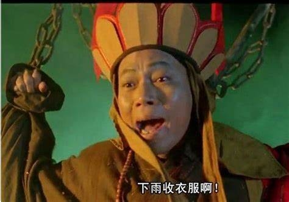

逃离资本的迷幻世界
我们总是被社会的框架所束缚，在资本的游戏中追求所谓的成功和财富。然而，什么是真正的自由？逃离这些束缚，放下焦虑与攀比，人生的意义不再是外界标准的反映，而是内心的自我探索。
今天，我们来挑战传统的认知，摆脱固有的价值观。去中心化不仅仅是一种技术，它代表着彻底的自我主权——你可以做你自己，感受真实的世界，而不是被资本和权力牵着走。
2025.5.6 日志 作者：Epochfuture Team

我们总是被社会的框架所束缚，在资本的游戏中追求所谓的成功和财富。然而，什么是真正的自由？逃离这些束缚，放下焦虑与攀比，人生的意义不再是外界标准的反映，而是内心的自我探索。
今天，我们来挑战传统的认知，摆脱固有的价值观。去中心化不仅仅是一种技术，它代表着彻底的自我主权——你可以做你自己，感受真实的世界，而不是被资本和权力牵着走。